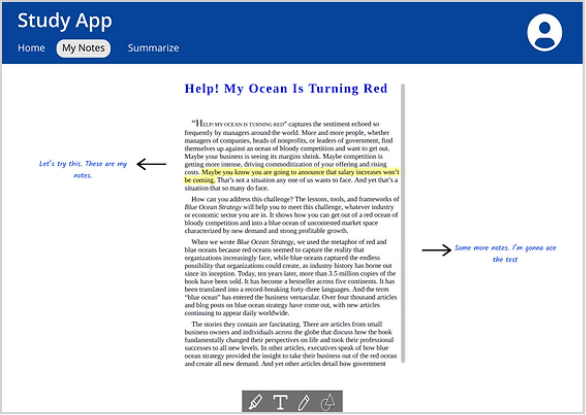
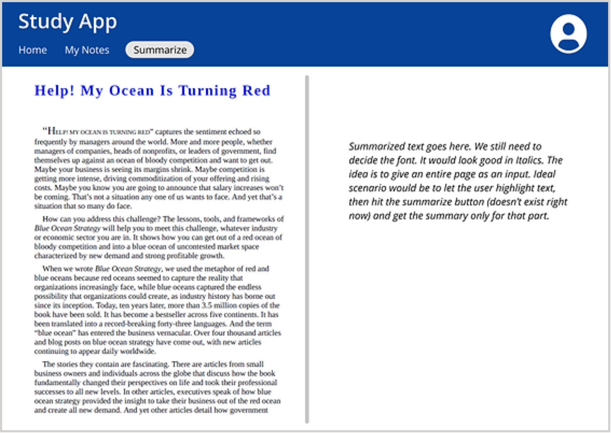
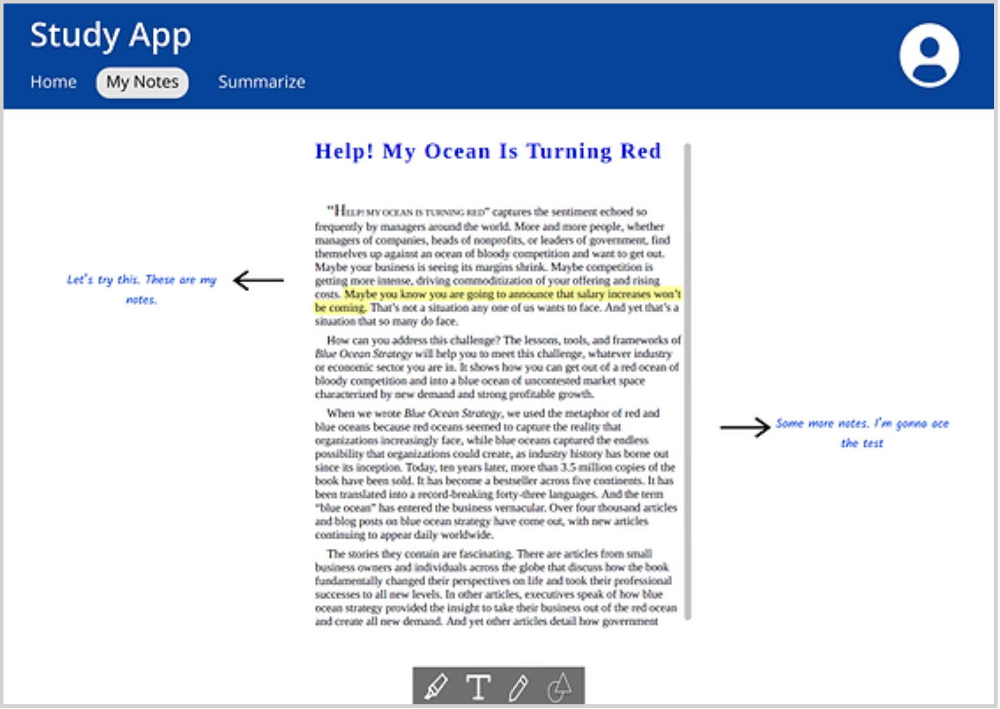
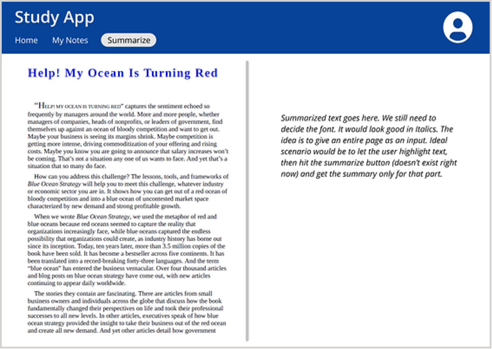
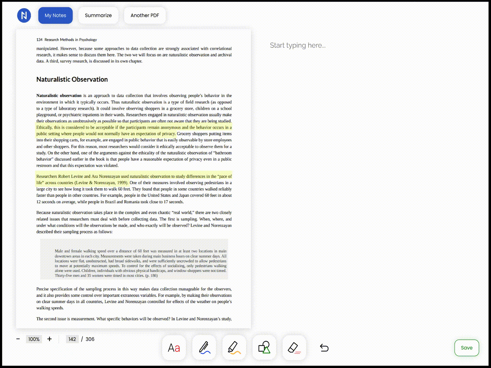
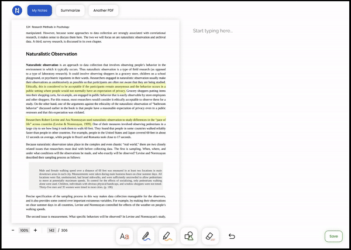

UX Design | July-October 2021
Noteable is a web app that improves dense reading experiences by allowing users to easily take quick notes on PDF readings, as well as auto generate summaries given paragraphs of text.
Ideation sessions with client, information architecture, low-fi and high-fi wireframe, prototype design
Figma and Miro
Emily Song (UX Designer) and Shikha Kandpal (Client)
How might we improve people's reading experiences of dense texts?
Speaking with our client, we ideated several main functionalities to help visualize what will be required for Noteable.
What we discussed includes: onboarding, PDF viewer, note-taking annotation tools, and text summarizer.
The client already had their own initial design ideas on the product going into discussion.
The following was their initial concept:
 



I made an empathy map to understand what users may say, feeling, think, and want when they are faced with large reading.

Using the empathy map, I then identified a few pain points that users may experience when trying to read dense texts.

I created an information architecture to visualize Noteable's basic user flows.


Annotation | Users can take notes and annotate PDF files
Summarization | Users can generate AI summaries, and edit them as needed
Throughout this process I learned that getting a client's input throughout the design process and repeated iteration on our product is critical to solution building. Throughout our design cycle, we continuously spoke with the client to see what they thought of the designs, and I saw that a client may understand what they want but not necessarily how to move towards that their vision. Therefore it was very rewarding as a designer to work continuously with them to find how differing solutions can meet their needs.